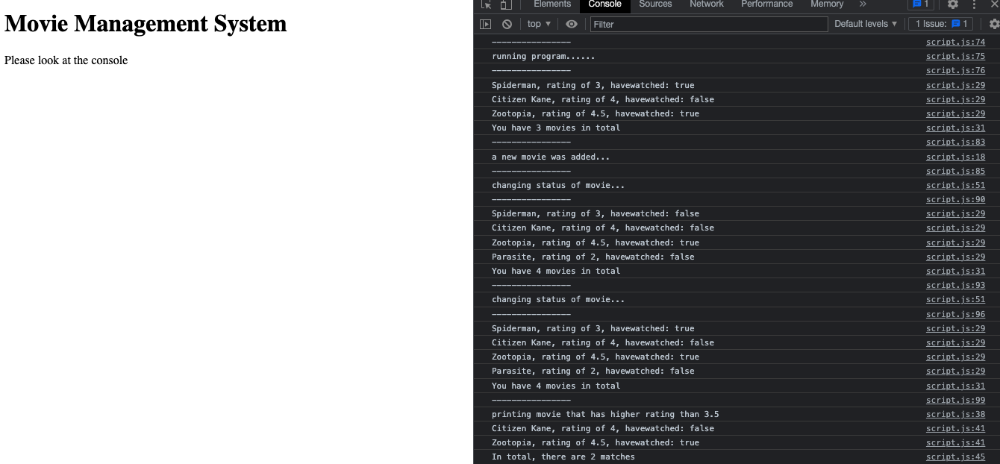

Fall 2022 Projects
This semester, I had the opportunity to work on several different projects that helped me develop my skills in javascript. I was able to work on a variety of team projects such as creating a 3D-model of a 2D photo, writing a movie generator program, and even build a Twitterbot! Below, you will see a few of my projects that I worked on these past few months.
This first project is a 3D model we created using A-Frame. This platform allowed us to use a variety of HTML elements and tags to create a 3D rendering of a 2D photo that students could pick. We worked in teams, and my group and I decided to create this nightime scene of a moon with pink trees and a blue landscape to imitate a sea, based on a our reference picture of the same landscape.

This second project is the movie managment system I programmed. Using a variety of javascript properties such as functions, conditionals, loops, booleans, and objects I was able to program this movie managment system that rates and adds different movies to a list of films, as well as indiacte whether a film was watched. Above is a link to the website, which you can right-click to inspect the site and view the console and source to see the output and javascript. I've also included a photo to show the console specifically.

The next assignment we did this semester was the Twitterbot. My group and I created a Twitterbot that takes a tweet that includes a hashtag from a specific list we indicated in our program, and then retweets it on our own Twitter feed. The retweet capitalizes the caption of the tweet and includes the angry penguin meme. We formatted the retweet in such a way that it takes the caption and arranges it as a conversation. We used a gotData() function to retrieve all the tweets that included hashtags we listed in our program. We then used a random number generator to randomly select from the pool of tweets to retweet onto our feed.